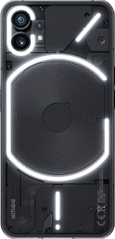
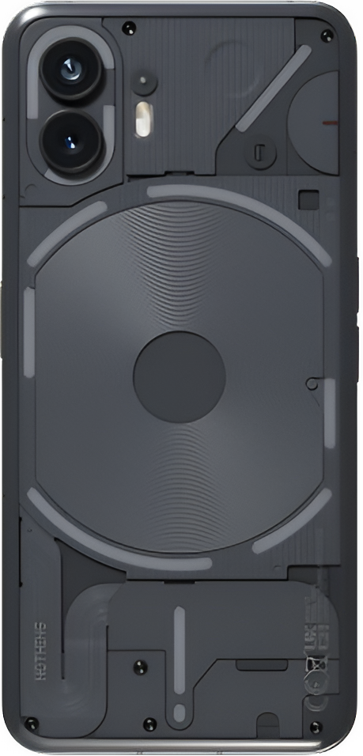
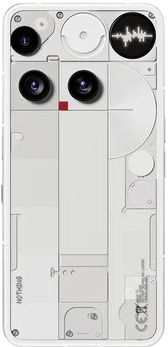

1
Phone 1
The Nothing Phone (1) is a mid-range smartphone defined by its unique transparent design and the Glyph Interface, an array of LED lights on the back that flashes for notifications. It offers a premium feel with flat edges, a smooth 120Hz OLED display, and a clean, bloatware-free experience running on the customized Nothing OS with a capable Snapdragon 778G+ processor.
- Release: July 12, 2022
- Version: Android 15, Nothing OS 3.0
- Dimensions: 6.27 x 2.98 x 0.33 in
- Video back camera: 4K@30fps, 1080p@30/60fps, gyro-EIS, live HDR
- Video front camera: 1080p@30fps
- Colors: White, Black
- Display: OLED, 1B colors, 120Hz, 1200 nits
- Battery: 4500 mAh
- Mirco SD slot: no
- Fingerprint: under display, optical
- Glyph: lights
2
Phone 2
The Nothing Phone (2) offers a premium leap with a curved-glass design and an enhanced Glyph Interface of rear LED lights. It features a flagship Snapdragon 8+ Gen 1 chip, a larger 6.7-inch LTPO OLED screen, and improved cameras, all managed by the distraction-free Nothing OS 2.0.
- Release: July 21, 2023
- Version: Android 16, Nothing OS 4.0
- Dimensions: 6.38 x 3.01 x 0.34 in
- Video back camera: 4K@30/60fps, 1080p@30/60fps, gyro-EIS, live HDR, OIS
- Video front camera: 1080p@30fps
- Colors: White, Dark Gray
- Display: OLED, 1B colors, 120Hz, 1600 nits
- Battery: 4700 mAh
- Mirco SD slot: no
- Fingerprint: under display, optical
- Glyph: lights
3

Phone 2a
The Nothing Phone (2a) is the affordable mid-range choice, sporting the Dimensity 7200 Pro chip, a large 120Hz AMOLED screen, and an excellent 5,000mAh battery. It features a simplified Glyph Interface and dual 50MP cameras.
- Release: March 5, 2024
- Version: Android 16, Nothing OS 4.0, up to Android 17, Nothing OS 5.0
- Dimensions: 6.37 x 3.00 x 0.34 in
- Video back camera: 4K@30fps, 1080p@60/120fps, gyro-EIS
- Video front camera: 1080p@60fps
- Colors: Black, White, Blue(India Exlusive)
- Display: AMOLED, 1B colors, 120Hz, 1300 nits
- Battery: 5000 mAh
- Mirco SD slot: no
- Fingerprint: under display, optical
- Glyph: lights
4

CMF Phone 1
The CMF Phone 1 is Nothing's budget phone, known for its unique, customizable design with swappable back covers. Key specs include a Dimensity 7300 5G chip, a 6.67" 120Hz AMOLED screen, a 50MP main camera, and a 5,000mAh battery.
- Release: July 12, 2024
- Version: Android 16, Nothing OS 4.0
- Dimensions: 6.46 x 3.03 x 0.32 in
- Video back camera: 4K@30fps, 1080p@30/60fps, gyro-EIS
- Video front camera: 1080p@30fps
- Colors: Black, Orange, Light Green
- Display: AMOLED, 120Hz 2000 nits
- Battery: 5000 mAh
- Mirco SD slot: yes
- Fingerprint: under display, optical
- Glyph: none
5

Phone 3a
The Nothing Phone (3a) is a standout mid-range phone defined by its signature transparent design and clean Nothing OS. It packs a powerful Snapdragon 7s Gen 3 chip, a big 5,000mAh battery, and a vibrant 6.77-inch 120Hz AMOLED screen. A major highlight is its triple camera, which uniquely includes a 50MP telephoto lens at this price point.
- Release: March 4, 2025
- Version: Android 16, Nothing OS 4.0, up to Android 18, Nothing OS 6.0
- Dimensions: 6.44 x 3.05 x 0.33
- Video back camera: 4K@30fps, 1080p@30/60/120fps, gyro-EIS, OIS
- Video front camera: 1080p@30fps
- Colors: Black, White, Blue
- Display: AMOLED, 1B colors, 120Hz, 3000 nits
- Battery: 5000 mAh
- Mirco SD slot: no
- Fingerprint: under display, optical
- Glyph: lights
6

Phone 3a pro
The Nothing Phone (3a) Pro is the camera-focused model, powered by the Snapdragon 7s Gen 3 and a 5,000mAh battery. It maintains the signature design and Mothing OS, but upgrades the triple-camera system with a 50MP periscope telephoto lens (3x optical zoom) and a 50MP front camera.
- Release: March 4, 2025
- Version: Android 16, Nothing OS 4.0, up to Android 18, Nothing OS 6.0
- Dimensions: 6.44 x 3.05 x 0.33
- Video back camera: 4K@30fps, 1080p@30/60/120fps, gyro-EIS, OIS
- Video front camera: 4K@30fps, 1080p@30fps
- Colors: Black, Gray
- Display: AMOLED, 1B colors, 120Hz, 3000 nits
- Battery: 5000 mAh
- Mirco SD slot: no
- Fingerprint: under display, optical
- Glyph: lights
7

CMF Phone 2 Pro
The CMF Phone 2 Pro is a stylish and capable budget phone from Nothing, featuring a 6.77-inch 120Hz AMOLED display and the MediaTek Dimensity 7300 Pro 5G chipset. It boasts a notable 50MP triple-camera setup, including a 2x telephoto lens, and is powered by a 5,000 mAh battery running on the minimalist Nothing OS 3.2.
- Release: April 28, 2025
- Version: Android 16, Nothing OS 4.0, up to Android 18, Nothing OS 6.0
- Dimensions: 6.46 x 3.07 x 0.31 in
- Video back camera: 4K@30fps, 1080p@30/60/120fps, gyro-EIS
- Video front camera: 1080p@30fps
- Colors: White, Black, Orange, Light Green(not available on Nothing website)
- Display: AMOLED, 1B colors, 120Hz, 3000 nits
- Battery: 5000 mAh
- Mirco SD slot: yes
- Fingerprint: under display, optical
- Glyph: none
8
Phone 3
The Nothing Phone (3), Nothing's first true flagship, features the Snapdragon 8s Gen 4 chip and trades the Glyph Interface for the new Glyph Matrix dot-matrix rear display. Key upgrades include a 50MP periscope zoom camera, a larger battery, and much faster 100W charging.
- Release: July 15, 2025
- Version: Android 16, Nothing OS 4.0, up to Android 20, Nothing OS 8.0
- Dimensions: 6.32 x 2.98 x 0.35 in
- Video back camera: 4K@30/60fps, 1080p@30/60fps, gyro-EIS, OIS
- Video front camera: 4K@60fps, 1080p@60fps
- Colors: Black, White
- Display: AMOLED, 1B colors, 120Hz, 3000 nits
- Battery: 5150 mAh, 5500 mAh(India Model)
- Mirco SD slot: no
- Fingerprint: under display, optical
- Glyph: matrix